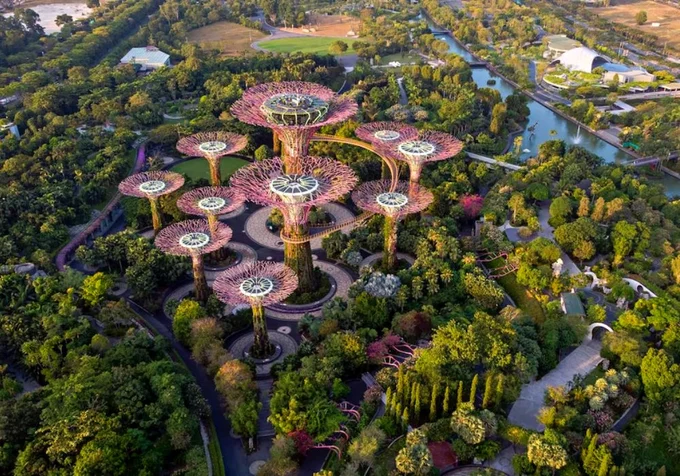
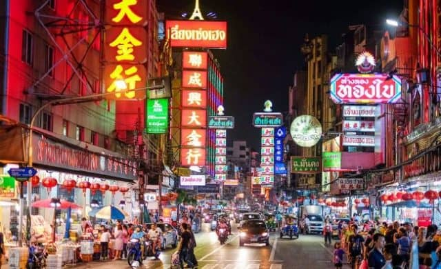

Điểm Tham Quan Nổi Bật
-
 Marina Bay Sands
Marina Bay Sands
-  Garden by the Bay
-
 Sentosa
Sentosa
-  Khu phố Chinatown
 Laksa: Món bún nước cốt dừa cay béo, ăn kèm tôm, cá viên, và trứng.
Laksa: Món bún nước cốt dừa cay béo, ăn kèm tôm, cá viên, và trứng.